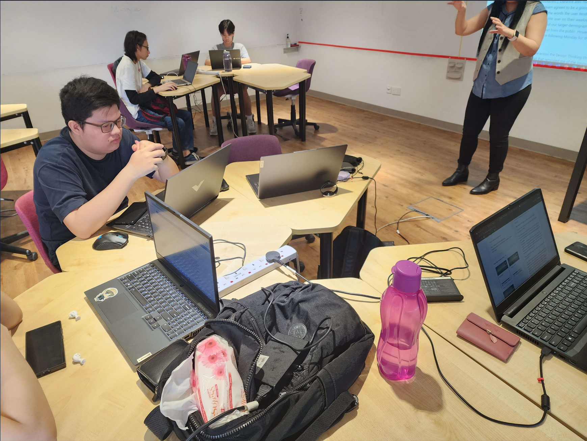

Week 15 - Work Work Work
Week 15 is the week where the team is able to work to our fullest. This is due to the amount of work and data we have collected and ideas we have collected to be done with the remaining time we have.
With this week being the second last lesson we have before needing to present out work, we have prepared ourselves with many questions and answers to ask our teacher, Ms Lee, with so that we are able to dedicate the next few week to implement of the functions we have decided upon. As class started, we were greeted with Ms Lee after not seeing her for 2 week. The class proceeded as normal as she explained to the class on what we are going to be doing today, similar to last f2f lesson, the only difference is that this week she will be taking about our PFD blog where she asked for a volunteer to show their PFD Blog work to give comment about it to show the class what she is expecting to be good and what can be improved to help boost the score of the blog. Me being the good student I am, I volunteered to use my blog as an exmaple to show the class what can be improved and what is already good in the blog.
Reviewing my PFD Blog
I volunteered to use my PFD Blog to be reviewed by our teacher as I want to know what is good about my blog and what can be improved. After volunteering, Ms Lee opened up my Blog and saw that I have detailed my blog weekly neatly and clearly with each week Labelled and sectioned out evenly. The next thing she commented that were good is how I have a paragraph heading for different things I did for the week. For example, I sectioned out what I did in class, what different things she taught and told the class and another section for group discussion. Every single category of things I did were sectioned out nicely.
However, with all the good things about my blog listed out, she started to list out the things that were not as good. The first thing she pointed out was how all my blogs do not have pictures to show proof of what we did as the teacher need the pictures to show proof and "verify" that we did what was stated. Another thing that she find is flawed is that I did not show what I did for the week specifically for the PFD project as we need that for them to know what we contributed for the project and give us the mark accordingly. Other than those cons from my work, there is not much things else to say and she moved on to another persons's blog to judge.

With all the comments I have received from my teacher, I have decided to add pictures and start to take pictures almost daily now in order to use them in the blog in the future. In addition, I will updated all my blogs with pictures and revise all the things I have done weekly for the PFD project.
Group Discussion
After the blog review, we moved on to our teacher going to each class to ask and give comment on what we have done or things we have thought of doing for the project. For this week, with all the preparations we have done, we bombarded our teacher with questions and made sure that we have all our questions answered.
The first thing we asked is if she things the idea of having a translation feature is a good thing as translation are not accurate and may be prone to translating to the wrong meaning. However, Arash have seen online reviews that GPT API is surprisingly good at translating and have verified that by translating simplified text into langauge that we know and have made sure that it gives the right translation. After making sure it works, we proposed this idea to our teach and after getting some feedback on it we decide to implement it to our final work.
The next thing we asked is what we could add into our landing page as we do not know what we could include in order to make it appealing to first time users. I have thought of the idea of showing short video tutorial to show how the app works and the features that comes along with it. After inquiring it with my teacher, we have also decided that it is a good feature to include into our work.
After asking a few more questions about minor features and some other questions that we are unsure of, this concludes our dicussion for the week.
Boot Strap Studios
After finalising our choices on what we are going to do, me and Darance are responsible for making the landing page where new users comes to download our app with tutorials to teach new users how the app works. Me and Darance are discussing on what tools we can use to create our landing page. Darance suggested to use WIX but I wanted to create it with HTML & CSS as I feel like we are able to customise it more and get more points out of it, however, we are unsure if we are able to create our desired design. Arash hopped into the conversation and suggested we use the tool called Boot Strap Studios.
Upon learning boot strap studios I went out of my way to explore and use this app where we are able to create design we want similar to how wix is able to, however, the issue is that there is a lot more work to do compared to wix as firstly, there are a lot more work that need to be done with many transitions options. For example, tranisitoning from landscapre to portrait mode and depending on the screen resolution would also affect how the website looks. After exploring it and trying to use it for around 4 hours, I have finally created a wesbite that looks like the wire frame we created, however, compared to wix, we are still new to it and is unable to work efficiently. So we decided to use WIX to create our website.

Summary
For this week there have been a lot of progress compared to other days as we have a face to face lesson with our teacher, enabling us to ask questions on the spot with feedback. Next we are able to discuss with our group mate face to face without any distractions from the surroundings unlike meeting up online. Me and Darance have created a wireframe and decided to make a website accordingly. The first thing we did is that we have tried to use bootstrap studios but found it hard to use and in the end decided to make use of WIX due to how simple and easy it is.
Lastly, our entire team have been allocated with task, me & Darance handling landing page, Arash handling translation features and Ching Heng handling customisation of theme and font sizes.